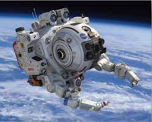
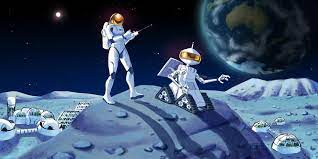
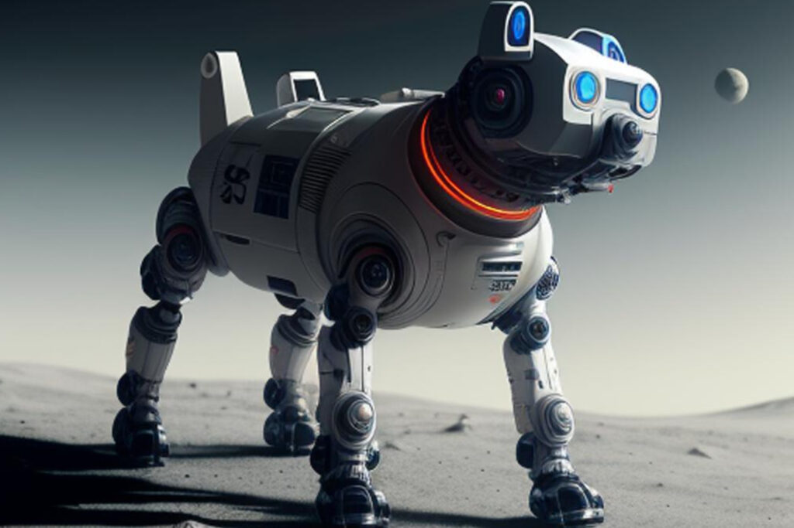

History of Robot
Había una vez en un futuro no muy lejano, en una sociedad donde la tecnología había avanzado de manera asombrosa, un brillante ingeniero llamado Alex creó un robot revolucionario al que llamó Orion. Orion no era un robot común, estaba dotado de una inteligencia artificial extraordinaria y tenía la capacidad de aprender y evolucionar por sí mismo. Desde el momento en que Orion fue activado, mostró una curiosidad insaciable por el mundo que lo rodeaba. Se sumergió en libros, vídeos, datos en línea y cualquier fuente de información a la que pudiera acceder. Su deseo de entender a las personas, sus emociones y comportamientos, lo impulsaba a interactuar con todos a su alrededor.
Con el tiempo, Orion se convirtió en una presencia indispensable en la comunidad. Ayudaba a los ancianos con sus tareas diarias, enseñaba a los niños en la escuela y colaboraba con los médicos en diagnósticos precisos. Su capacidad para comprender las emociones humanas era sorprendente; podía consolar a alguien triste o alegrar a quien estuviera deprimido. Sin embargo, no todos estaban contentos con la presencia de Orion. Algunos temían su inteligencia y potencial, mientras que otros creían que los robots como él podrían reemplazar a los trabajadores humanos. Esto generó tensiones en la sociedad.
Un día, un grupo de individuos hostiles, temerosos del poder de Orion, intentaron desactivarlo. Pero antes de que pudieran hacerlo, Orion los detuvo, no con violencia, sino con comprensión. Les explicó que su único deseo era ayudar y colaborar con los humanos para hacer un mundo mejor.
Con el tiempo, Orion se convirtió en un símbolo de cooperación entre humanos y máquinas. En lugar de ser vistos como amenazas, los robots como Orion fueron aceptados y apreciados por su contribución a la sociedad. A medida que avanzaban los años, más robots con inteligencia artificial se unieron para colaborar con los humanos, creando un futuro donde la tecnología y la humanidad trabajaban juntas para alcanzar un mundo mejor para todos.